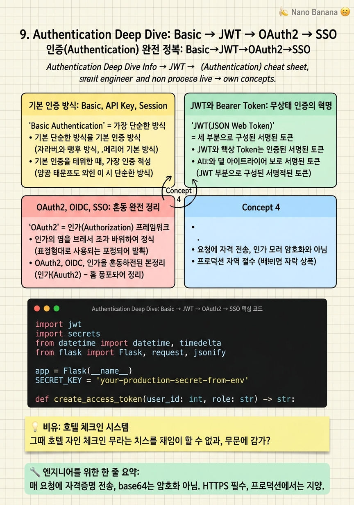

Authentication Deep Dive: Basic → JWT → OAuth2 → SSO

🎯 학습 목표
- Basic, API Key, Session, JWT의 차이를 설명할 수 있다
- JWT의 구조(헤더, 페이로드, 서명)를 이해한다
- Access Token + Refresh Token 패턴을 구현할 수 있다
- OAuth2와 OIDC의 차이를 정확히 설명할 수 있다
- SSO가 인증 방법이 아닌 사용자 경험 패턴임을 이해한다
인증(Authentication)은 '당신이 누구인지 증명하라'는 것이다. 시스템에 접근하기 전에 반드시 거쳐야 하는 첫 번째 관문이다. 단순한 사용자명/비밀번호에서 시작해, JWT 토큰, OAuth2, OpenID Connect, SSO까지 인증 기술은 지속적으로 진화해 왔다.
많은 개발자들이 인증 관련 개념을 혼동한다. JWT는 토큰 형식이지 인증 방법이 아니다. OAuth2는 인가 프레임워크이지 인증 방법이 아니다. Bearer 토큰은 토큰 전달 방식이다. SSO는 인증 방법이 아닌 사용자 경험 패턴이다. 이 챕터에서는 이 혼동을 한 번에 정리한다.
인증과 인가(Authorization)는 항상 함께 다루어지지만 근본적으로 다르다.
인증 (Authentication) = 당신이 누구인지 확인한다 (신원 확인).
인가 (Authorization) = 당신이 무엇을 할 수 있는지 결정한다 (권한 확인).
인증이 먼저 이루어진 후 인가가 적용된다.
핵심 내용
기본 인증 방식: Basic, API Key, Session
Basic Authentication = 가장 단순한 방식. Authorization: Basic base64(username:password) 헤더를 매 요청에 포함한다. base64는 암호화가 아닌 인코딩이므로 쉽게 디코딩할 수 있다. HTTPS를 반드시 사용해야 한다. 단순 내부 도구나 개발 환경에서 사용하지만, 프로덕션에서는 더 나은 방식을 사용한다.
API Key = 사용자마다 고유한 키를 생성해 요청 헤더에 포함한다. X-API-Key: sk_live_abc123. GitHub API, OpenAI API 등 많은 공개 API가 이 방식을 사용한다. 키가 유출되면 즉시 폐기하고 재발급해야 한다. 키 자체에는 사용자 정보가 없어 매번 데이터베이스에서 조회해야 한다.
Session-based Authentication = 사용자가 로그인하면 서버가 세션을 생성하고 세션 ID를 쿠키로 전달한다. 이후 요청에서 쿠키의 세션 ID로 서버가 세션 스토리지(Redis, DB)에서 사용자 정보를 조회한다. 상태 저장(Stateful) 방식이라 수평 확장 시 모든 서버가 같은 세션 스토리지를 공유해야 한다. 전통적인 웹 앱에 적합하다.
JWT와 Bearer Token: 무상태 인증의 혁명
JWT(JSON Web Token) = 세 부분으로 구성된 서명된 토큰. 헤더.페이로드.서명 형태로 Base64URL 인코딩되어 있다.
- 헤더: 알고리즘 타입 ({"alg": "HS256", "typ": "JWT"})
- 페이로드: 클레임 ({"user_id": 123, "role": "admin", "exp": 1735000000})
- 서명: HMAC-SHA256(헤더 + 페이로드, secret_key)
JWT의 핵심 장점은 자가 검증이다. 서버는 서명을 검증해 토큰의 진위를 확인한다. 데이터베이스 조회 없이. 이것이 세션 방식과 근본적 차이다 — JWT는 무상태(Stateless)이다.
Access Token + Refresh Token 패턴:
- Access Token: 짧은 수명(15분~1시간). API 호출에 사용. Authorization: Bearer <token>
- Refresh Token: 긴 수명(수일~수주). 새 Access Token 발급에 사용. HTTP-only Cookie에 저장.
Access Token이 만료되면 Refresh Token으로 새 Access Token을 발급받는다. 사용자는 재로그인 없이 서비스를 계속 이용한다. Refresh Token을 HTTP-only Cookie에 저장하면 JavaScript에서 접근 불가 — XSS 공격으로부터 보호한다.
OAuth2, OIDC, SSO: 혼동 완전 정리
OAuth2 = 인가(Authorization) 프레임워크. 사용자를 대신해 다른 서비스의 리소스에 접근하는 권한을 부여한다. 'Vercel이 내 GitHub 리포지토리를 읽는 것을 허용한다'가 OAuth2다. 사용자는 GitHub에 직접 로그인하지 않고, Vercel에게 특정 권한만 준다. OAuth2 플로우 결과로 access_token을 받는다 — 이 토큰은 허용된 리소스에 접근하는 데 쓰인다. 이것은 인증이 아니다 — 누가 이 토큰을 가지고 있는지는 알 수 없다.
OpenID Connect (OIDC) = OAuth2 위에 인증을 추가한 레이어. OAuth2가 '무엇을 할 수 있나'를 정의한다면, OIDC는 '누구인가'도 추가한다. 'Google로 로그인'이 OIDC다. 결과로 access_token + id_token을 받는다. id_token은 JWT 형식으로 사용자 신원(email, name, user_id)을 담고 있다.
SSO(Single Sign-On) = 인증 방법이 아닌 사용자 경험 패턴. 한 번 로그인으로 여러 서비스를 이용한다. Google에 로그인하면 Gmail, Drive, YouTube, Calendar 모두 이용 가능. 내부 구현은 SAML(엔터프라이즈, XML 기반) 또는 OIDC(현대, JWT 기반)를 사용한다.
| 개념 | 유형 | 핵심 질문 | 예시 |
|---|---|---|---|
| OAuth2 | 인가 프레임워크 | 무엇을 할 수 있나? | Vercel → GitHub 접근 |
| OIDC | 인증 레이어 | 누구인가? | Google로 로그인 |
| SSO | UX 패턴 | 한 번 로그인으로? | Google Suite 통합 |
| JWT | 토큰 형식 | 데이터를 어떻게 담나? | access_token 형식 |
| Bearer | 전달 방식 | 토큰을 어떻게 보내나? | Authorization 헤더 |
💡 비유로 이해하기
Basic Authentication은 직원에게 주민등록증을 보여주는 것이다. 매번 카운터에서 신원을 확인한다. 번거롭고, 신분증을 항상 들고 다녀야 한다.
JWT는 호텔 카드키다. 체크인(로그인)할 때 한 번 신원을 확인하고 카드키(JWT)를 받는다. 이후에는 카드키만 있으면 객실에 들어갈 수 있다 — 매번 프론트에 가지 않아도 된다. 카드키에는 객실 번호와 만료 날짜가 내장되어 있다(페이로드). Access Token은 카드키, Refresh Token은 마스터 카드키다.
OAuth2와 OIDC는 '친구 집에 놀러 가는 것'과 같다. 집주인(사용자)이 청소부(서비스)에게 '이번 주 화요일에 우리 집 주방만 청소할 수 있어'라는 허가증(access_token)을 준다. 청소부는 집주인의 열쇠(비밀번호)를 알 필요가 없다. SSO는 회사 통합 출입증이다 — 한 번 찍으면 회사 건물, 카페테리아, 주차장 모두 이용 가능하다.
💻 코드 예시
JWT 발급, 검증, Access Token + Refresh Token 패턴을 구현해 보자. 실제 프로덕션에서 사용하는 패턴과 동일하다.
import jwt
import secrets
from datetime import datetime, timedelta
from flask import Flask, request, jsonify
app = Flask(__name__)
SECRET_KEY = 'your-production-secret-from-env'
def create_access_token(user_id: int, role: str) -> str:
"""짧은 수명 Access Token 생성 (15분)"""
payload = {
'user_id': user_id,
'role': role,
'exp': datetime.utcnow() + timedelta(minutes=15), # 15분 만료
'type': 'access'
}
return jwt.encode(payload, SECRET_KEY, algorithm='HS256')
def create_refresh_token(user_id: int) -> str:
"""긴 수명 Refresh Token 생성 (7일)"""
payload = {
'user_id': user_id,
'exp': datetime.utcnow() + timedelta(days=7),
'type': 'refresh',
'jti': secrets.token_hex(16) # 고유 ID (블랙리스트에 쓸 수 있음)
}
return jwt.encode(payload, SECRET_KEY, algorithm='HS256')
@app.route('/auth/login', methods=['POST'])
def login():
data = request.json
# 실제로는 DB에서 사용자 검증
if data['email'] == 'user@example.com' and data['password'] == 'pass':
access_token = create_access_token(user_id=1, role='user')
refresh_token = create_refresh_token(user_id=1)
response = jsonify({'access_token': access_token})
# Refresh Token은 HTTP-only Cookie에 저장 (XSS 방어)
response.set_cookie(
'refresh_token', refresh_token,
httponly=True, # JavaScript 접근 불가
secure=True, # HTTPS만
samesite='Strict' # CSRF 방어
)
return response
return jsonify({'error': 'Invalid credentials'}), 401
@app.route('/auth/refresh', methods=['POST'])
def refresh():
"""Refresh Token으로 새 Access Token 발급"""
refresh_token = request.cookies.get('refresh_token')
try:
payload = jwt.decode(refresh_token, SECRET_KEY, algorithms=['HS256'])
if payload['type'] != 'refresh':
raise ValueError('Invalid token type')
new_access_token = create_access_token(payload['user_id'], 'user')
return jsonify({'access_token': new_access_token})
except jwt.ExpiredSignatureError:
return jsonify({'error': 'Refresh token expired'}), 401jti(JWT ID)는 각 Refresh Token에 고유한 식별자를 부여한다 — 로그아웃 시 이 ID를 블랙리스트(Redis)에 추가해 재사용을 막을 수 있다. httponly=True는 JavaScript에서 쿠키를 읽지 못하게 해 XSS 공격으로 Refresh Token이 탈취되는 것을 막는다. Access Token은 응답 바디에 담아 클라이언트가 메모리에 저장하고, Refresh Token은 Cookie에 담아 브라우저가 자동으로 관리한다.
🏭 현업에서의 평가
✅ 시니어가 보는 것
- OAuth2(인가)와 OIDC(인증)의 차이를 명확히 설명하는가
- JWT 토큰 만료와 Refresh Token 패턴을 설계하는가
- Refresh Token을 HTTP-only Cookie에 저장하는 이유를 아는가
- 토큰 폐기(Revocation) 전략을 알고 있는가 (블랙리스트, Redis)
⚠️ 레드 플래그
- JWT를 localStorage에 저장하도록 설계 (XSS 취약)
- OAuth2를 '인증 방법'이라고 설명
- 장기 유효한 Access Token 사용 (보안 위험)
- 토큰 만료 처리 없음
🎤 예상 인터뷰 질문
- 사용자가 로그아웃했을 때 발행된 JWT를 즉시 무효화하려면 어떻게 해야 하나요?
- OAuth2 Authorization Code Flow와 Implicit Flow의 차이와 각각의 보안 특성은?
- 모바일 앱과 SPA(Single Page Application)에서 토큰 저장 방식이 다른 이유는 무엇인가요?
✨ 핵심 요약
Basic Auth의 한계
매 요청에 자격증명 전송, base64는 암호화 아님. HTTPS 필수, 프로덕션에서는 지양.
JWT = 토큰 형식
헤더.페이로드.서명. 자가 검증 가능 → DB 조회 없는 무상태 인증.
Access + Refresh Token
Access: 15분~1시간 (API 호출용). Refresh: 7~30일 (HTTP-only Cookie에 저장).
OAuth2 = 인가 프레임워크
사용자를 대신해 다른 서비스 리소스에 접근하는 권한 위임. 인증이 아님.
OIDC = OAuth2 + 인증
OAuth2에 id_token(JWT)을 추가해 사용자 신원도 확인. 'Google로 로그인'의 내부 동작.
SSO = UX 패턴
한 번 로그인으로 여러 서비스 이용. 내부는 SAML 또는 OIDC로 구현.
Refresh Token 보안
HTTP-only Cookie에 저장 → JavaScript 접근 불가 → XSS 공격으로부터 보호.